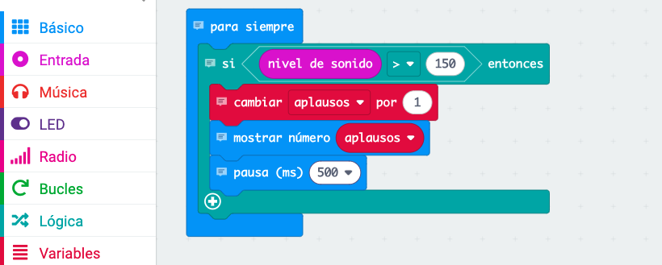

8. Contador de aplausos
Actividad
Programa la micro:bit para que:
- Cuente cuántos aplausos detecta y muestre el total en la pantalla.
Instrucciones
1. Crea el Bucle Continuo:
- Ve a la categoría Básico y arrastra el bloque para siempre al área de trabajo.
- Este bloque asegura que el programa esté funcionando continuamente mientras la micro
está encendida.
2. Añade una Condición para Detectar el Sonido:
- Dentro del bloque para siempre, arrastra el bloque si...entonces de la categoría Lógica.
- Este bloque permite ejecutar acciones solo cuando se cumple una condición específica.
3. Configura la Condición del Nivel de Sonido:
- Haz clic en el espacio vacío del bloque si...entonces.
- Desde la categoría Entrada, arrastra el bloque nivel de sonido y combínalo con el operador > de la categoría Lógica.
- Configura la comparación como nivel de sonido > 150. Esto significa que el programa detectará un sonido fuerte, como un aplauso.
4. Crea una Variable para Contar los Aplausos:
- Ve a la categoría Variables y selecciona "Crear una variable". Llámala aplausos.
- Usa el bloque cambiar aplausos por 1 y colócalo dentro del bloque si...entonces.
- Esto aumentará el contador aplausos en 1 cada vez que se detecte un aplauso.
5. Muestra el Número de Aplausos:
- A continuación, en el bloque si...entonces, agrega el bloque mostrar número de la categoría Básico.
- Selecciona la variable aplausos para que la pantalla LED muestre el número total acumulado.
6. Evita Detecciones Repetidas:
- Dentro del bloque si...entonces, añade desde la categoría Básico un bloque pausa (ms) y configúralo en 500 ms (medio segundo). Esto previene que un solo aplauso se detecte múltiples veces debido a su duración.
Bloques Necesarios
Básico > por siempre
Lógica > si...entonces
Entrada > nivel de sonido
Variables > crear variable ("aplausos")
Básico > mostrar número
